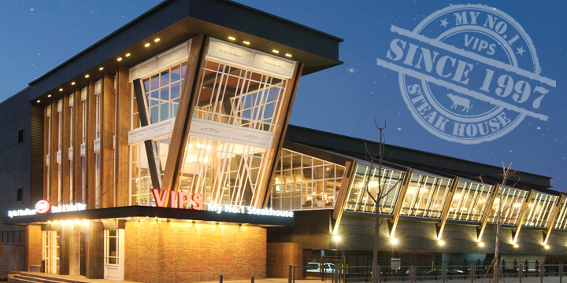
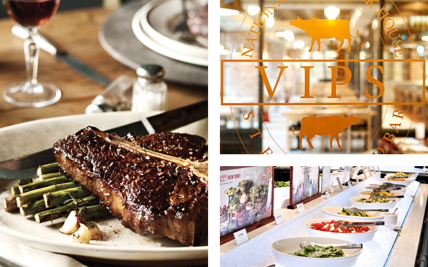
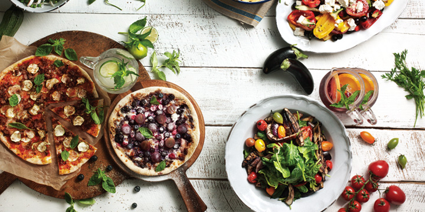

엄선된 쇠고기를 다양하고 차별화된 조리방식으로 즐길 수 있는 스테이크와 계절별로 신선하고 풍성한 샐러드바를 즐길 수 있는 곳, 빕스!
VIPS는 Very Important Person’s Society의 약자로 ‘고객 한 분 한 분을 귀한 손님으로 소중하게 모시겠다’는 빕스의 마음가짐을 담고 있습니다

지난 1997년 3월, 1호점(등촌점)을 오픈한 이래 고객님의 기대, 행복한 경험을 위해 항상 노력하고 있습니다.
- 늘 신선하고
새로운 맛 - 활력 넘치는
즐거운 공간 - 배려와 진심이
담긴 서비스
다양한 부위, 조리법, 숙성, 소스 등을 이용한 다채로운 스테이크
2010년 말 빕스는 프리미엄 스테이크하우스로의 변신을 선포하고 점차 까다로워지는 고객들의 입맛에 부응하기 위해 세계 각국의 스테이크 전문점을 탐방하여 정통 스테이크의 맛을 구현하기 위해 노력했으며 브로일링, 팬 프라잉 등 다양한 조리법과 숙성방법을 개발해 왔습니다.

지난 15년간 무려 2,000여개의 메뉴를 선보이며 건강함과 신선함, 다양함을 추구한 샐러드바
빕스는 97년 런칭 당시부터 ‘샐러드바’라는 새로운 Frame을 도입, 빕스만의 차별화된 포인트로 건강과 웰빙 컨셉의 메뉴들을 한 발 앞서 고객들에게 제시했습니다. 빕스의 샐러드 바는 지금도 새로운 변화를 시도하며 진화하고 있습니다.
신선한 샐러드바와 정통 스테이크까지, 이 모든 것을 My No.1 스테이크 하우스, 빕스에서 만나세요!